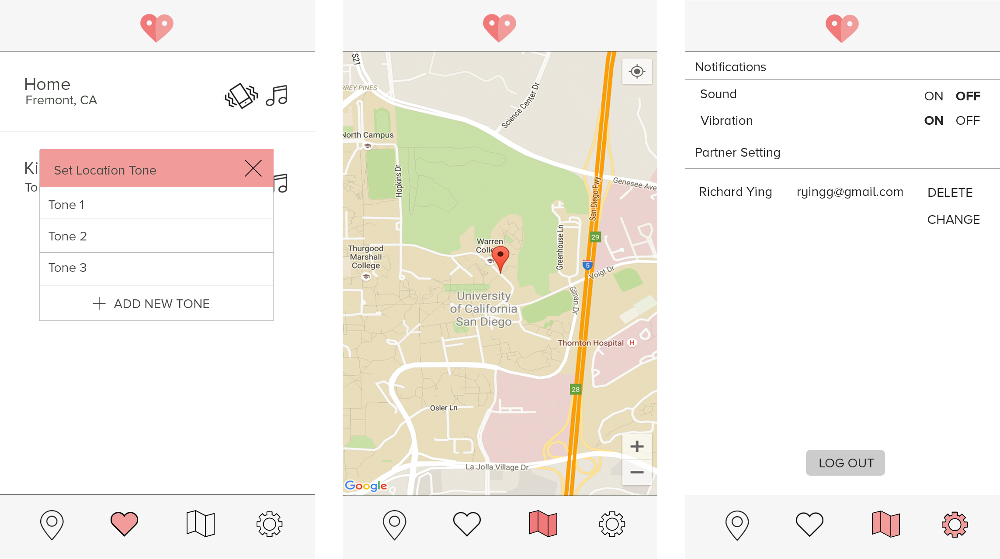

« Back to Projects Next Project »
CoupleTones
CSE110: Software Engineering
METHODS Agile software development, UI Design/Mockups
TOOLS Firebase, Android Studio, Google APIs, JIRA
TEAM Bryan Tuhsakul, Emily Chen, Mark Lui, Aaron Wong, Misheelt Munkhjargal
ROLE Frontend lead for app UI, contributed to frontend and backend development
TOOLS Firebase, Android Studio, Google APIs, JIRA
TEAM Bryan Tuhsakul, Emily Chen, Mark Lui, Aaron Wong, Misheelt Munkhjargal
ROLE Frontend lead for app UI, contributed to frontend and backend development
OVERVIEW
CoupleTones is a geolocation social app. The app allows a pair of partners to set favorite locations as well as custom ringtones and vibrate tones for each location to get notified when their partner enters or leaves a certain location without checking their phones.
ITERATIONS
Before we started our sprints, we created user stories and analyzed risks and assumptions, then split our stories into two shippable milestones. We did scenario based system tests after each milestone and junit tests throughout our sprints.
Creating User Story
Creating Tasks
Scenario Testing

SOLUTION
Our product was a fully functioning app that was tested using json files through Android Studio and a couple of Andriod phones teammates owned.
Below are all the digital mock ups I created with photoshop.
« Back to Projects Next Project »